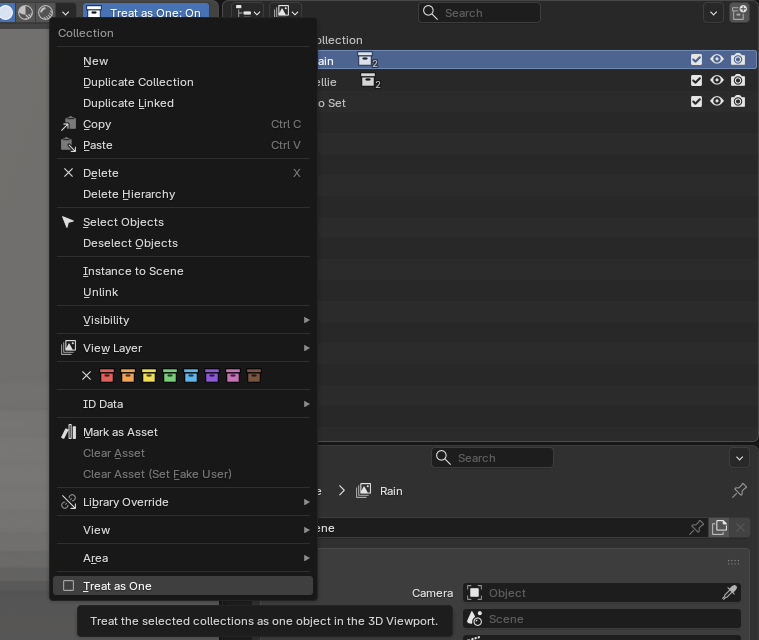

Wholegrip quick start
Install Wholegrip and use its four parts in a few minutes. Every detail is in the reference, and the same text is inside the download as README.md. Back to the Wholegrip product page.
Wholegrip works only on the collections you mark. Every other click stays plain Blender.
Install (Blender 4.2 LTS to 5.2 LTS)
Tested on Blender 4.2.23, 4.5.15, 5.0.1, 5.1.2 and 5.2.3 on Linux (how we tested). If something does not work, email support@ochrestack.com.
- After checkout, download
wholegrip-1.1.9.zipfrom the link in Polar's email. Install the zip itself; do not unzip it first. - In Blender, open Edit > Preferences > Get Extensions.
- Blender may first ask about internet access. Wholegrip needs none, so Continue Offline is fine.
- Blender may then show its own red “Repository Alert” saying extensions.blender.org is unavailable. That is normal offline and does not affect the install.
- Open the drop-down menu (⌄) at the far right of the Get Extensions header, choose Install from Disk... and pick the zip. (Blender 5.2 shows two chevrons there: the filter, then this menu, the right-most one.)
- In Object Mode, the Treat as One: On button appears at the right end of the 3D Viewport header. It is Wholegrip's global switch: a click turns it to Treat as One: Off (every click plain Blender) and the status bar says so. The sidebar and the preferences show the same switch.
To upgrade, install the newer zip the same way: your marked collections and collection modifiers live in your .blend files, so nothing is lost. To remove Wholegrip: Edit > Preferences > Get Extensions, open the ⌄ menu on the Wholegrip entry under Installed, choose Uninstall. (Preferences > Add-ons only lets you disable it.) Your files still open and render the same.
1. Mark a collection
Do either of these:
- In the Outliner, right-click a collection > Treat as One. With several collections selected, all of them are marked.
- Go to Properties > Collection tab > Wholegrip and tick Treat as One. Properties shows the collection that is active in the Outliner, so click the collection there first.
A marked collection turns blue in the Outliner; a colour you gave a collection yourself is never changed.

Then, in Object Mode in the 3D Viewport:
- Click any part: the whole collection is selected, child collections included, and the part you clicked becomes active.
- Tweak tool: press any part and drag. The whole collection moves; whatever is behind the part, such as the floor, stays where it is.
- Box drag (Select Box tool, or B): every marked collection the box touches is taken whole. Shift adds, Ctrl subtracts.
- Shift+click adds or removes the whole collection. Ctrl+click picks just the part under the cursor.
- Shift+D on a whole marked collection puts the copy in a new collection of its own, marked, with its own copy of the collection's modifiers; one Ctrl+Z takes it back.
- Alt+U or the Treat as One: On / Off header button turns all of this off and on.
A click on a part of a collection that is not wholly selected always takes that collection, even on the very spot you just Ctrl+clicked. Nested marked collections, hidden objects and a second click on the same spot are in the reference.
2. Collection Modifiers
In the sidebar's Wholegrip tab (N), click the wrench on the collection's row: its Collection Modifiers open in a popup over the viewport. The same panel is in Properties > Collection. Properties shows the collection that is active in the Outliner, so click the collection there first. Click Add Modifier; type to search, as in Blender's own menu.
Blender's Bevel starts at a width of 0.1 m, as it does on any object, which is a lot on thin furniture parts: type the width you want (0.005 to 0.02 m suits most furniture) right after adding it.
- Each modifier goes to the bottom of every member's stack. Change a value in the panel and every member follows.
- Objects you move into the collection get the stack; objects you move out lose it.
- Apply to All and Remove from All ask first, saying how many modifiers and members they will change; Ctrl+Z undoes them.
3. View layers
In the Outliner, right-click one or more collections > View Layer. Under Blender's own entries, three more sit under the label Across view layers:
- Include in All View Layers;
- Exclude from All View Layers;
- Only in This View Layer: included in the active view layer, excluded in the others.
4. Sidebar
Press N in the 3D Viewport and open the Wholegrip tab: the switch, your marked collections with a wrench each, and a grid of every collection against every view layer. What each part does is in the reference.
Limits
- Objects inside a linked or instanced collection are left alone: Wholegrip does not edit linked or library-overridden data.
- No Edit Mode across members and no group pivot.
- Only modifiers are kept in step. Across view layers, only include and exclude. One scene at a time.
- Circle and Lasso selection stay plain Blender. If you switch between left- and right-click select, disable and re-enable Wholegrip so the click keys follow.
Privacy
Wholegrip makes no network calls and sends nothing anywhere. It changes only the collections, modifiers and view-layer settings you act on, plus its own flags saved in the .blend file.
Support
Email support@ochrestack.com with your Blender version, your operating system and, if you can, a small .blend file that shows the problem.
Pictures: Blender 5.2.3 with Wholegrip 1.1.9. Characters: Rain Rig (CC) Blender Foundation | studio.blender.org, and Ellie (CC) Blender Foundation | studio.blender.org, used under CC BY 4.0; not included with Wholegrip.